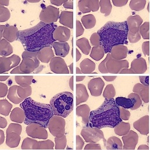
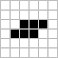

What is the "Game of Life" ?
The "Game of Life" (or simply reffered to as Life) is a game of cellular automaton invented by the British mathematician John Horton Conway in 1970. It is mainly a zero-player game. The only input required from the user is the initial state and the game can cotninue from that point onwards alone.
working with cells

Life is all about working with cells, getting them to reproduce, making them sustain each other or getting them extinct from the map.
Based on strict predefined set of rules, the final configuration of the map can be either an empty set, a fixed and unchanging configuration of cells, a continuous oscilation of cells or a combination of all these.
life patterns
Some common patterns of cell have been detected to yield a certain behaviour in the Game of Life:
- Still lifes - The ones that do not move at all:
- Block

- Beehive

- Loaf

- Boat

- Block
- Oscillators - The ones that oscilate:
- Blinker (2 periods)

- Toad (2 periods)
- Beacon (2 periods)

- Pulsar (3 periods)

- Blinker (2 periods)
- Spaceships - Pack of cells that traverse the map:
- Glider

- Lightweight spaceship

- Glider